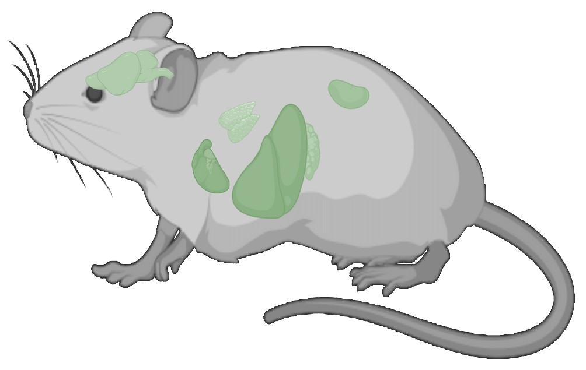

Every cell is a crowded, three-dimensional world — and for the first time we can map it, structure by structure. This is a corner of a real cell. Let's take one piece of mouse liver and zoom in, about a million times.
Chapter 1 · The organ
≈ 1 centimeterA mouse liver is about the size of a grape — a chemical factory that filters blood, stores energy and detoxifies, run by hundreds of millions of cells. We take a tiny piece of it, smaller than a grain of salt, and preserve it in an instant, so that everything inside stops mid-motion, exactly where it was in life.

Chapter 2 · The tissue
≈ 1 millimeter → 100 µmThis is a working unit of the liver — blood flows from the purple side to the yellow side, and the cells along the way do different chemical jobs, like stations on an assembly line. Every single cell in this block has been found and outlined by our software. Until recently, seeing a whole tissue this way was impossible.
Meanwhile, elsewhere in nature
Chapter 3 · One cell
≈ 25 µm — 3,000× smaller than the liverPick one liver cell out of the crowd. It is a city: power plants, a shipping department, warehouses, a library of DNA at the center — all packed into a box three times smaller than the width of a hair. Here is one entire liver cell, and every organelle inside it.
Chapter 4 · The machines inside
≈ 1 µmEvery biology textbook has this cartoon. Click any organelle — and see what it actually looks like, in a real cell, in real data.
Meanwhile, elsewhere in nature
Chapter 5 · The membrane
≈ 10 nanometers — journey's endZoom all the way in and you reach the membrane — the cell's skin, ten thousand times thinner than a hair. And here is the point of the whole journey: at this resolution a picture stops being just a picture. The colors below aren't decoration — they are measurements, made at every point on a real membrane.
Chapter 6 · Now run it backwards
We just went from an organ to a single membrane, and everything along the way was measured. Millions of cells, billions of measurements. Feed all of it — this 3D anatomy, the Human Protein Atlas's maps of where every protein lives, movies of living cells, close-ups of single molecules — to AI, and something new becomes possible: a cell you can simulate. Ask it what happens when a drug arrives or a gene breaks — before doing a single experiment. That is what Alpha Cell is building, in Sweden, now.
Keep exploring
Everything you saw is real, published, and free to explore. Fly through the full tissue volumes in your browser on OpenOrganelle, or see how the AI is trained at the CellMap Segmentation Challenge.